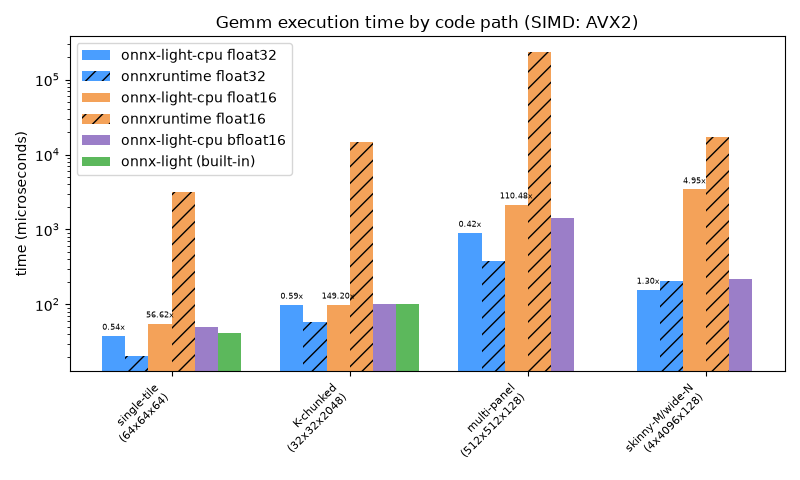

Note
Go to the end to download the full example code.
Benchmark Gemm: float32 vs float16 vs bfloat16 across kernel code paths#
onnx-light-cpu’s Gemm kernel picks between several internal code paths
depending on the shape of A/B (see Gemm Kernel Design for the
full decision tree):
a single-tile path when
M,NandKall fit in onekGemmTileM x kGemmTileNoutput tile and onekGemmTileKreduction chunk – the packing/blocking machinery barely does anything;a K-chunked path when
KexceedskGemmTileK(256): the reduction is split into several chunks that accumulate intoY(kInitZero/kInitBiasfor the first chunk,kAccumulatefor the rest);a multi-panel path when both
MexceedskGemmTileM(64) andNexceedskGemmTileN(256): the output is walked as a 2-D grid of row blocks x column panels, each dispatched as its ownParallelFortask;a skinny-M / wide-N path (a matvec-like shape: a tiny
Mwith a largeN) that specifically exercises the 2-D task parallelism on theNaxis alone, since a single row block would otherwise starve every thread but one.
This example benchmarks all three element types the kernel supports –
float32, float16 and bfloat16 – on one representative shape per
code path. float16/bfloat16 have no dedicated SIMD micro-kernel:
GemmKernel widens them to float32, calls the same SIMD-accelerated
GemmFloat32 routine used for the float32 case, and rounds the result
back down (see onnx_light_cpu/kernels/math/gemm_kernel.cc). The extra
widen/round-trip is therefore pure overhead on top of the float32 compute,
and this example shows how that overhead shrinks (relatively) as the shape
gets more compute-heavy.
onnxruntime is measured on the same models and inputs for float32 and
float16. Its CPU execution provider does not implement Gemm for
bfloat16, so no onnxruntime bfloat16 result is shown.
An additional baseline, onnx-light (built-in), shows onnx-light’s own
un-accelerated C++ reference Gemm kernel for float32, as a
baseline. It only supports float32 (the reference kernel has no
float16/bfloat16 Gemm implementation) and is only measured for the
single-tile and K-chunked shapes: it is dramatically slower on the
multi-panel and skinny-M/wide-N shapes, to the point that including it
there would dwarf every other curve and defeat the purpose of the comparison.
Why resolve it before register_kernels(): onnx_light_cpu.register_kernels()
permanently overrides the process-wide Gemm kernel entry for the default
domain, and a session only resolves/caches which kernel it uses on its
first run. The built-in session is therefore primed before registration but
measured later, after the accelerated phase. Every accelerated session is
created and first run after registration.
Setup#
Report which SIMD level the current CPU provides. The mapping is 0=None,
1=SSE2, 2=AVX, 3=AVX2 and 4=AVX512.
import os
import time
import ml_dtypes
import numpy as np
import onnxruntime
# ``UNITTEST_GOING=1`` shrinks the benchmark (fewer/smaller shapes) so the
# example runs quickly as a unit test while still exercising every code path.
unit_test_going = os.environ.get("UNITTEST_GOING", "0") in ("1", "true", "True")
# ``onnx-light`` ships ``onnx_light.onnx`` as a drop-in replacement for the
# ``onnx`` package; use it to build the models so the example depends on
# onnx-light rather than onnx.
from onnx_light.onnx import TensorProto, checker, helper
from onnx_light.onnx.reference import ReferenceEvaluator
from onnx_light_cpu import (
clear_used_kernel_names,
register_kernels,
registered_kernel_names,
used_kernel_names,
)
from onnx_light_cpu.onnx_py._cpukernels import detect_simd_level, has_cpu_kernels
from onnx_light_cpu.onnx_py._cpuregister import set_kernel_usage_recording
_SIMD_NAMES = {0: "scalar", 1: "SSE2", 2: "AVX", 3: "AVX2", 4: "AVX-512"}
assert has_cpu_kernels()
level = detect_simd_level()
simd_name = _SIMD_NAMES.get(level, level)
print(f"CPU kernels available, SIMD level: {level} ({simd_name})")
CPU kernels available, SIMD level: 3 (AVX2)
Element types under test#
Each entry maps a label to the TensorProto element type and the numpy /
ml_dtypes dtype used to encode the random inputs.
DTYPES = {
"float32": (TensorProto.FLOAT, np.float32),
"float16": (TensorProto.FLOAT16, np.float16),
"bfloat16": (TensorProto.BFLOAT16, ml_dtypes.bfloat16),
}
def make_model(tensor_proto_dtype):
"""Builds a single-node ``Gemm`` model (``Y = A @ B``) for one dtype."""
graph = helper.make_graph(
[helper.make_node("Gemm", ["A", "B"], ["Y"], alpha=1.0, beta=1.0)],
"gemm_dtype_bench",
[
helper.make_tensor_value_info("A", tensor_proto_dtype, ["M", "K"]),
helper.make_tensor_value_info("B", tensor_proto_dtype, ["K", "N"]),
],
[helper.make_tensor_value_info("Y", tensor_proto_dtype, ["M", "N"])],
)
model = helper.make_model(graph, opset_imports=[helper.make_opsetid("", 18)], ir_version=13)
checker.check_model(model)
return model
def make_session(tensor_proto_dtype):
return ReferenceEvaluator(make_model(tensor_proto_dtype))
Timing helper#
Each candidate gets three untimed warm-up calls, then is called repeat
times (at least seven) and the median wall-clock time is retained.
def measure(func, repeat, warmup=3):
for _ in range(warmup):
func()
timings = []
for _ in range(repeat):
start = time.perf_counter()
func()
timings.append(time.perf_counter() - start)
return float(np.median(timings))
Shapes chosen to activate each Gemm code path#
kGemmTileM == 64, kGemmTileN == 256 and kGemmTileK == 256 (see
onnx_light_cpu/impl/math/gemm_kernel.cc); every shape below is picked to
sit clearly on one side of those thresholds.
SHAPES = (
[
("single-tile\n(64x64x64)", 64, 64, 64),
("K-chunked\n(32x32x512)", 32, 32, 512),
("multi-panel\n(128x128x128)", 128, 128, 128),
("skinny-M/wide-N\n(4x1024x128)", 4, 1024, 128),
]
if unit_test_going
else [
("single-tile\n(64x64x64)", 64, 64, 64),
("K-chunked\n(32x32x2048)", 32, 32, 2048),
("multi-panel\n(512x512x128)", 512, 512, 128),
("skinny-M/wide-N\n(4x4096x128)", 4, 4096, 128),
]
)
# Only the two "light" shapes get an ``onnx-light (built-in)`` baseline; the
# reference kernel is far too slow on the multi-panel / skinny-M-wide-N shapes
# for a fair comparison.
ALONE_SHAPE_LABELS = {SHAPES[0][0], SHAPES[1][0]}
Prime the built-in baseline before registering the accelerated kernels#
register_kernels() permanently replaces the process-wide Gemm
kernel; a session only picks up whichever kernel is registered at the time
of its first run() call. A dedicated float32 session is therefore
built and primed with a tiny input before register_kernels() runs.
alone_session = make_session(TensorProto.FLOAT)
alone_results = {}
alone_session.run(
None,
{
"A": np.zeros((1, 1), dtype=np.float32),
"B": np.zeros((1, 1), dtype=np.float32),
},
)
register_kernels()
sessions = {label: make_session(tp) for label, (tp, _) in DTYPES.items()}
accelerated_kernel_name = registered_kernel_names()["Gemm"]
# onnx-light-cpu kernels record their name on every run (a mutex per call);
# only the accelerated curves would pay that cost, so disable recording to keep
# the timings fair. Recording is briefly re-enabled below to verify the exact
# implementation used for every benchmark shape and dtype.
set_kernel_usage_recording(False)
Run the benchmark#
For every shape and dtype, random float32 inputs are rounded to the target
dtype and fed through the matching session. All accelerated measurements
finish before the built-in kernel is timed and before ONNX Runtime sessions
are constructed. Results are validated after every timed phase has finished.
rng = np.random.default_rng(0)
results = {label: [] for label in DTYPES}
benchmark_inputs = []
for shape_label, M, N, K in SHAPES:
a32 = rng.standard_normal((M, K)).astype(np.float32)
b32 = rng.standard_normal((K, N)).astype(np.float32)
repeat = max(7, min(50, 200_000_000 // (M * N * K + 1)))
print(f"\nshape={shape_label.splitlines()[0]:<24} M={M} N={N} K={K} repeat={repeat}")
inputs = {
label: (a32.astype(np_dtype), b32.astype(np_dtype))
for label, (_, np_dtype) in DTYPES.items()
}
benchmark_inputs.append((shape_label, M, N, K, a32, b32, inputs, repeat))
for label in DTYPES:
a, b = inputs[label]
def run(session=sessions[label], a=a, b=b):
return session.run(None, {"A": a, "B": b})[0]
set_kernel_usage_recording(True)
clear_used_kernel_names()
run()
kernel_names = used_kernel_names()
assert accelerated_kernel_name in kernel_names, (label, shape_label, kernel_names)
set_kernel_usage_recording(False)
elapsed = measure(run, repeat)
results[label].append(elapsed)
print(f" {label:<9} | onnx-light-cpu={elapsed * 1e6:10.2f} us")
for shape_label, _M, _N, _K, a32, b32, _, repeat in benchmark_inputs:
if shape_label not in ALONE_SHAPE_LABELS:
continue
elapsed = measure(
lambda a=a32, b=b32: alone_session.run(None, {"A": a, "B": b})[0],
repeat,
)
alone_results[shape_label] = elapsed
print(
f"onnx-light (built-in) | shape={shape_label.splitlines()[0]:<24} "
f"| {elapsed * 1e6:10.2f} us"
)
ort_sessions = {
label: onnxruntime.InferenceSession(
make_model(DTYPES[label][0]).SerializeToString(),
providers=["CPUExecutionProvider"],
)
for label in ("float32", "float16")
}
ort_results = {label: [] for label in ort_sessions}
for shape_label, _, _, _, _, _, inputs, repeat in benchmark_inputs:
for label, session in ort_sessions.items():
a, b = inputs[label]
elapsed = measure(
lambda session=session, a=a, b=b: session.run(None, {"A": a, "B": b})[0],
repeat,
)
ort_results[label].append(elapsed)
print(
f" {shape_label.splitlines()[0]:<24} {label:<9} | "
f"onnxruntime={elapsed * 1e6:10.2f} us"
)
for shape_label, _, _, _, a32, b32, inputs, _ in benchmark_inputs:
expected = a32 @ b32
if shape_label in ALONE_SHAPE_LABELS:
np.testing.assert_allclose(
alone_session.run(None, {"A": a32, "B": b32})[0],
expected,
rtol=1e-3,
atol=1e-3,
)
for label in DTYPES:
a, b = inputs[label]
tol = 1e-3 if label == "float32" else (5e-2 if label == "float16" else 5e-1)
output = sessions[label].run(None, {"A": a, "B": b})[0]
np.testing.assert_allclose(output.astype(np.float32), expected, rtol=tol, atol=tol)
if label in ort_sessions:
ort_output = ort_sessions[label].run(None, {"A": a, "B": b})[0]
# onnxruntime's ``float16`` Gemm accumulates in ``float16``, whereas
# onnx-light-cpu widens to ``float32`` (see the module docstring), so
# onnxruntime's rounding error grows with the reduction length ``K``
# and needs a wider tolerance than the onnx-light-cpu comparison.
ort_tol = 5e-1 if label == "float16" else tol
np.testing.assert_allclose(
ort_output.astype(np.float32), expected, rtol=ort_tol, atol=ort_tol
)
print(f"verified {accelerated_kernel_name} for every benchmark shape and dtype")
set_kernel_usage_recording(True)
shape=single-tile M=64 N=64 K=64 repeat=50
float32 | onnx-light-cpu= 37.94 us
float16 | onnx-light-cpu= 55.39 us
bfloat16 | onnx-light-cpu= 49.21 us
shape=K-chunked M=32 N=32 K=2048 repeat=50
float32 | onnx-light-cpu= 98.42 us
float16 | onnx-light-cpu= 98.77 us
bfloat16 | onnx-light-cpu= 102.18 us
shape=multi-panel M=512 N=512 K=128 repeat=7
float32 | onnx-light-cpu= 898.09 us
float16 | onnx-light-cpu= 2146.09 us
bfloat16 | onnx-light-cpu= 1427.72 us
shape=skinny-M/wide-N M=4 N=4096 K=128 repeat=50
float32 | onnx-light-cpu= 156.03 us
float16 | onnx-light-cpu= 3418.25 us
bfloat16 | onnx-light-cpu= 215.63 us
onnx-light (built-in) | shape=single-tile | 42.10 us
onnx-light (built-in) | shape=K-chunked | 100.49 us
single-tile float32 | onnxruntime= 20.34 us
single-tile float16 | onnxruntime= 3136.03 us
K-chunked float32 | onnxruntime= 58.23 us
K-chunked float16 | onnxruntime= 14736.92 us
multi-panel float32 | onnxruntime= 375.31 us
multi-panel float16 | onnxruntime= 237109.75 us
skinny-M/wide-N float32 | onnxruntime= 203.23 us
skinny-M/wide-N float16 | onnxruntime= 16914.66 us
verified onnx_light_cpu::Gemm for every benchmark shape and dtype
Plot the timings#
The panel shows the raw execution time per shape/dtype on a log scale; solid bars are onnx-light-cpu and hatched bars are onnxruntime. The small labels above the onnx-light-cpu bars show their speed-up relative to onnxruntime for the same shape and dtype.
import matplotlib.pyplot as plt
shape_labels = [s[0] for s in SHAPES]
x = np.arange(len(SHAPES))
width = 0.13
colors = {
"float32": "#4a9eff",
"float16": "#f4a259",
"bfloat16": "#9b7ec8",
"onnx-light (built-in)": "#5cb85c",
}
fig, ax_time = plt.subplots(1, 1, figsize=(8, 4.8))
series = [
("onnx-light-cpu float32", results["float32"], colors["float32"], None),
("onnxruntime float32", ort_results["float32"], colors["float32"], "//"),
("onnx-light-cpu float16", results["float16"], colors["float16"], None),
("onnxruntime float16", ort_results["float16"], colors["float16"], "//"),
("onnx-light-cpu bfloat16", results["bfloat16"], colors["bfloat16"], None),
]
bar_containers = {}
for i, (label, times, color, hatch) in enumerate(series):
bar_containers[label] = ax_time.bar(
x + (i - 2.5) * width,
np.array(times) * 1e6,
width,
label=label,
color=color,
hatch=hatch,
)
for dtype in ("float32", "float16"):
speedups = np.array(ort_results[dtype]) / np.array(results[dtype])
for bar, speedup in zip(bar_containers[f"onnx-light-cpu {dtype}"], speedups, strict=True):
ax_time.annotate(
f"{speedup:.2f}x",
(bar.get_x() + bar.get_width() / 2, bar.get_height()),
xytext=(0, 3),
textcoords="offset points",
ha="center",
va="bottom",
fontsize=6,
)
# ``onnx-light (built-in)`` is only measured for the shapes in
# ``ALONE_SHAPE_LABELS``; only draw bars where it was actually measured.
alone_label = "onnx-light (built-in)"
alone_x = np.array(
[x[i] for i, shape_label in enumerate(shape_labels) if shape_label in alone_results]
)
alone_times = np.array(
[alone_results[shape_label] for shape_label in shape_labels if shape_label in alone_results]
)
ax_time.bar(
alone_x + 2.5 * width,
alone_times * 1e6,
width,
label=alone_label,
color=colors[alone_label],
)
ax_time.set_yscale("log")
ax_time.set_xticks(x)
ax_time.set_xticklabels(shape_labels, fontsize=8, rotation=45, ha="right")
ax_time.set_ylabel("time (microseconds)")
ax_time.set_title(f"Gemm execution time by code path (SIMD: {simd_name})")
ax_time.legend()
fig.tight_layout()
fig.savefig("plot_gemm_dtype_benchmark.png")
plt.show()

Total running time of the script: (0 minutes 5.503 seconds)